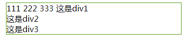
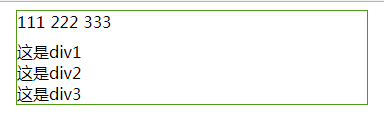
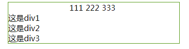
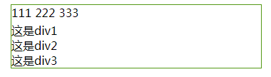

浮动使元素框向左或向右移动，直到它的外边缘碰到包含框或另一个浮动框的边框为止。
由于浮动框脱离了文档的普通流，所以文档的普通流中的框表现得就像浮动框不存在一样。
这段代码：
<style>
.parent {
width: 500px;
margin: 0 auto;
}
.left {
float: left;
list-style: none;
padding-right: 5px;
}
</style>
<div class="parent">
<ul class="div0">
<li class="left">111</li>
<li class="left">222</li>
<li class="left">333</li>
</ul>
<div class="div1">这是第一个内容</div>
<div class="div2">这是第二个内容</div>
<div class="div3">这是第二个内容</div>
</div>对三个li进行左浮动。我们预想的是div0的内容在同一行显示，其他的各自展示在一行中。然而事实是，div1紧跟在div0后，这便是浮动造成的影响。

浮动解决方法：
1、浮动元素父级设高法
也就是给div0设置一个高度。来看看效果：
.div0 { height: 30px; }
很好的解决了问题，不过平时我们在使用中不能精确的得出元素的高度，所以这个方法不太实用。
2、空div清除浮动
也就是给浮动元素后面加一个空的div标签，设置clear属性来清除浮动：
<style>
.clear { clear: both }
</style>
<div class="parent">
<ul class="div0">
<li class="left">111</li>
<li class="left">222</li>
<li class="left">333</li>
</ul>
<div class="clear"></div>
<div class="div1">这是div1</div>
<div class="div2">这是div2</div>
<div class="div3">这是div3</div>
</div>clear 属性定义了元素的哪边不允许出现浮动元素,这里也可以设置为clear: left。在这里直接给div1一个clear样式能起到同样的效果。
3、浮动元素父级设overflow:hidden/auto法
和第一种方法一样，只需要给div0加一个overflow属性：
.div0 {
overflow: hidden;
*zoom: 1 // 兼容ie7/6,*号表示只在ie7以下版本生效
}overflow本意是对溢出元素框的内容做处理。在这里用，刚好可以撑开父元素的高度。
4、浮动元素父级设display:inline-block
.div0 { display: inline-block}这种方式有种缺点，会使margin: 0 auto居中方式失效。
给div0增加一个宽度并且设置居中,并且用上面三种方式之一清除浮动后效果是这样:
.div0 {
overflow: auto; //清除浮动
width: 100px;
margin: 0 auto; // 居中
}
但是使用display: inline-block清除浮动，margin居中失效：
.div0 {
display: inline-block; //清除浮动
width: 100px;
margin: 0 auto; // 居中
}
5、伪类after清除浮动法
目前最常用也最好用的清除浮动方法。ie需要设置zoom触发hasLayout。
<style>
.clearFix {
*zoom: 1
}
.clearFix:after {
display: block;
content: "";
width: 0;
height: 0;
font-size: 0;
clear: both;
visibility: hidden;
overflow: hidden
}
</style>
<div class="parent">
<ul class="div0 clearFix">
<li class="left">111</li>
<li class="left">222</li>
<li class="left">333</li>
</ul>
<div class="div1">这是div1</div>
<div class="div2">这是div2</div>
<div class="div3">这是div3</div>
</div>